CORS(Cross-Origin Resource Sharing,跨域资源共享)
CORS是一个w3c标准，其思想是使用自定义的https头部让浏览器与服务器沟通。它允许浏览器向跨源服务器发出XMLhttpsRequest请求，从而克服浏览器对于js同源策略的限制。当一个资源从与该资源本身所在的服务器不同的域或端口请求一个资源，资源会发起一个跨域https请求。跨域是浏览器限制，目的是为了防止不同域之间访问造成的安全问题。简单理解就是不同域名下则产生了跨域，详细包括不同的端口、不同协议、不同域名、不同子域名都算跨域，详见下引用表格。
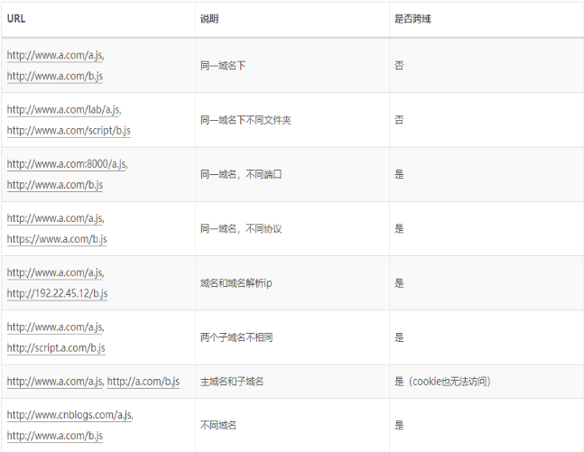
由于跨域浏览器的限制，所有来源于一个域内的js请求在请求其他域时，就会被浏览器拦截下。这里的拦截不一定是浏览器限制了发起跨站请求，也可能是跨站请求正常发起了，但请求回调中的返回结果被浏览器拦截了。比如CSRF跨站攻击，请求都发送到了后端服务器无论是否跨域。
CORS机制允许 Web 应用服务器进行跨域访问控制，从而使跨域数据传输得以安全进行。浏览器支持在 API 容器中（例如 XMLhttpsRequest 或 Fetch ）使用 CORS，以降低跨域 https 请求所带来的风险。
用 OPTIONS 方法发起一个预检请求（preflight request），从而获知服务端是否允许该跨域请求。服务器确认允许之后，才发起实际的 https 请求。在预检请求的返回中，服务器端也可以通知客户端，是否需要携带身份凭证（包括 Cookies 和 https 认证相关数据）
浏览器将CORS分为2类：简单请求 和 非简单请求.
简单请求：
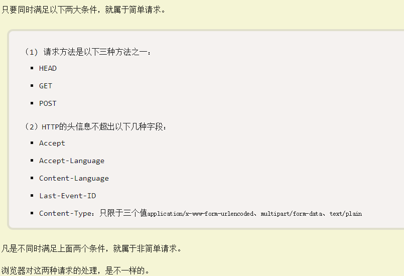
对于简单请求，浏览器直接发出CORS请求。具体来说，就是在请求报文中，增加一个Origin字段。如下例：
请求报文：
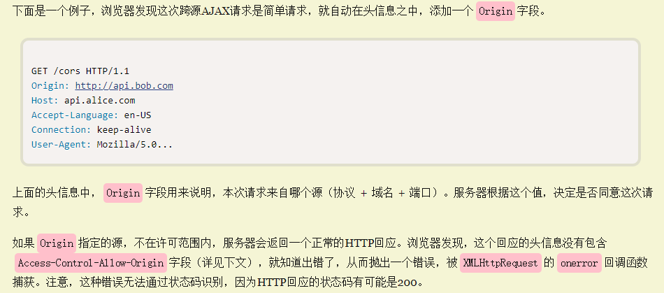
服务端响应：
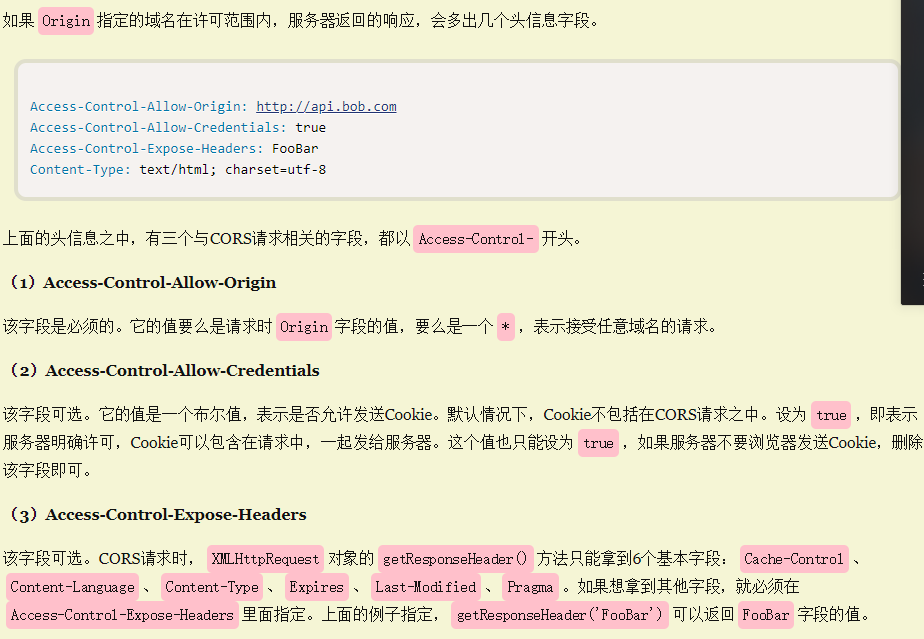
响应中携带了响应首部字段Access-Control-Allow-Origin.请求端和服务器响应端使用Origin和Access-Control-Allow-Origin就能完成最简单的访问控制。使用通配符，Access-Control-Allow-Origin： ，表明该资源可以被任意外域访问，如果服务端仅允许来自https：//api.bob.com的访问，该首部字段可设为Access-Control-Allow-Origin: https://api.bob.com, 即除了https://api.bob.com，其他外域不能访问该资源。
非简单请求：
是对服务器有特殊要求的请求，比如请求方法是PUT、DELETE或者Content-Type字段的类型是application/json。非简单请求的CORS请求，会在正式通信之前，增加一次https查询请求，称为‘预检请求’。需预检的请求要求必须首先使用OPTIONS方法发起一个预检请求到服务器，以获知服务器是否允许该实际请求。浏览器先询问服务器，当前网页所在的域名是否在服务器的许可名单之中，以及可以使用那些https动词和头信息字段。只有得到肯定，浏览器才会发出正式的XHR请求，否则就报错。
‘预检请求’的使用，可以避免跨域请求对服务器的用户数据产生未预期的影响。当满足下述任一条件时，即应发送预检请求：
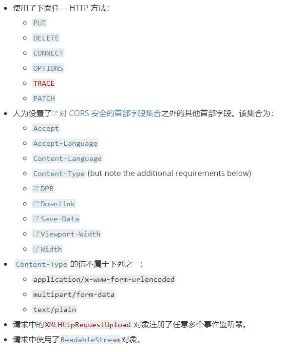
1：浏览器发出预检请求：
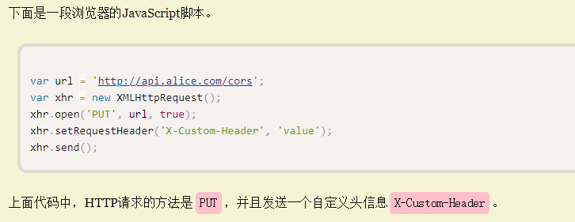
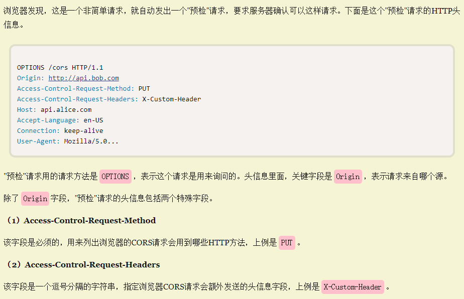
2：服务器响应预检请求:
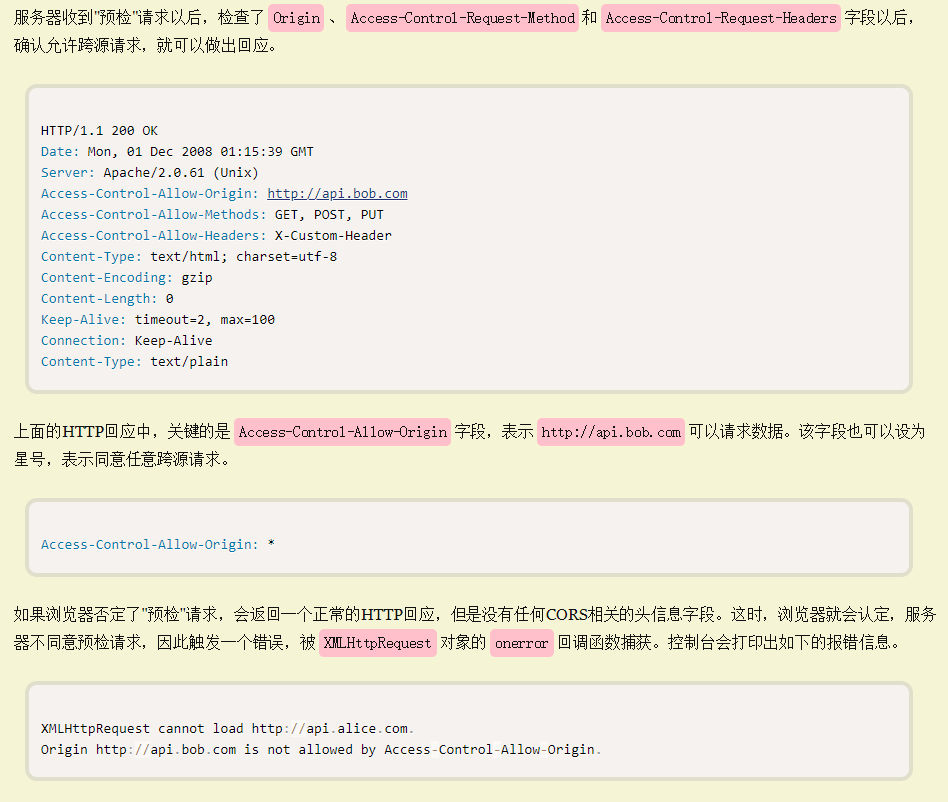
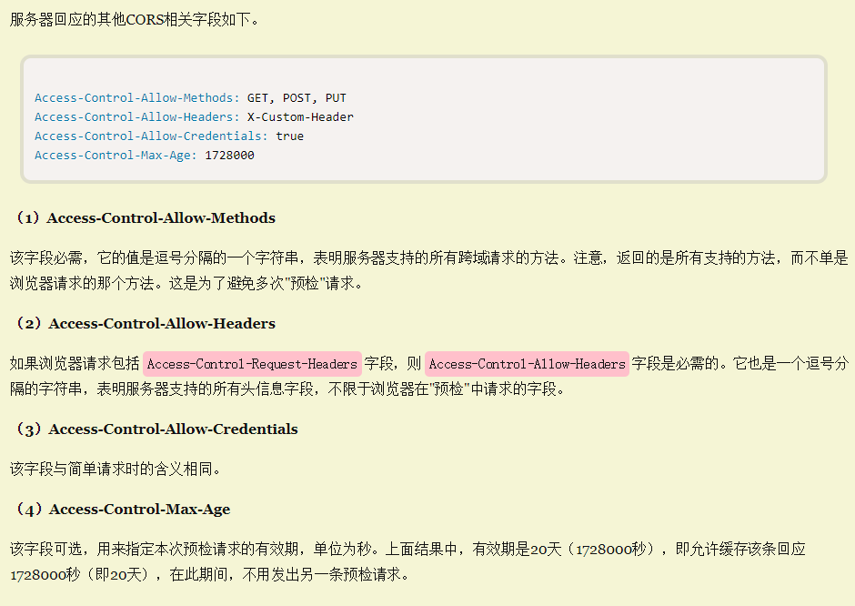
3、预检请求完成后，发送实际请求和回应
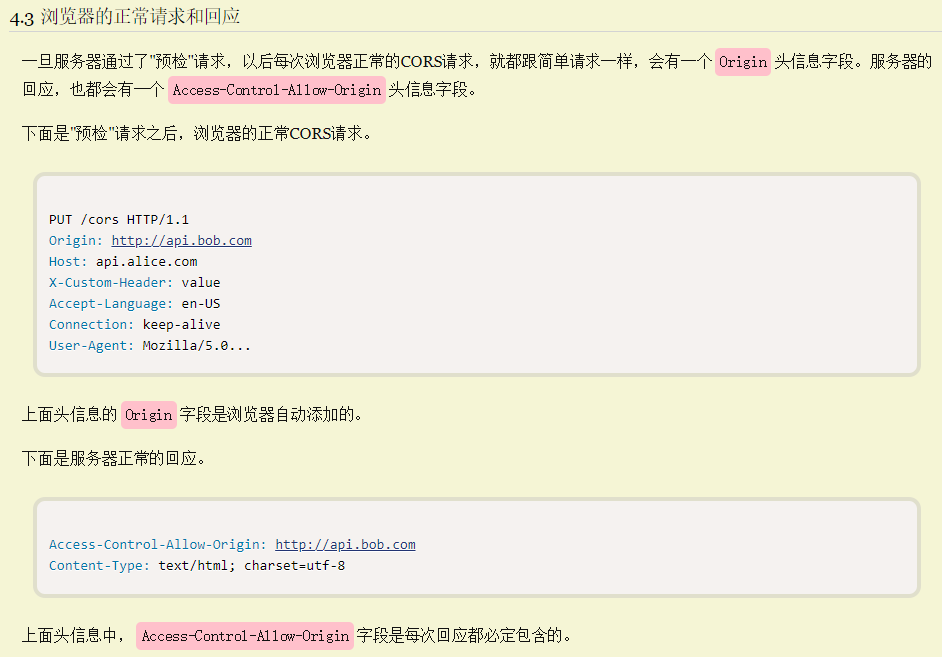
附带身份凭证的请求
Cookie，在许多业务场景中，往往会存在用户登录态需求，那么SessionID会隐藏的通过请求带给服务器，服务器通过SessionID判断是否是保持Session会话的客户端。然而在跨域请求中，即使设置了CORS，请求可以相互通信，但是Cookie还是无法通过请求带给服务端，此时Session会话无法保持。
可尝试将Access-Control-Allow-Credentials设置为true即可将cookie带入请求，并且在客户端将xhr的withCredential参数设置为true，匹配之后才能传递cookie。
对于附带身份凭证的请求，服务器不能设置Access-Control-Allow-Credentials的值为‘*’（安全问题）。
因为请求的首部中携带了cookie信息，设置为*将会失败，其值必须指定明确的、与请求网页一致的域名，将Access-Control-Allow-Credentials设置为，对应的某个域如https：//api.bob.com则请求将成功执行。
总结：
https 请求首部字段
用于发起跨域请求的首部字段，无须手动设置，当使用xhr对象发起跨域请求时，已经被设置就绪
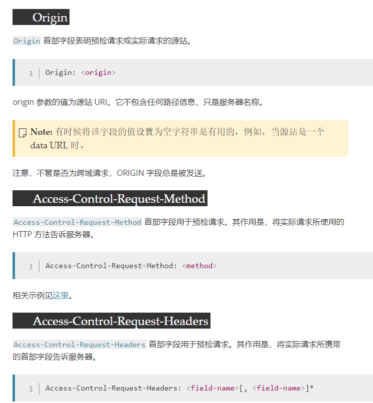
https 响应首部字段
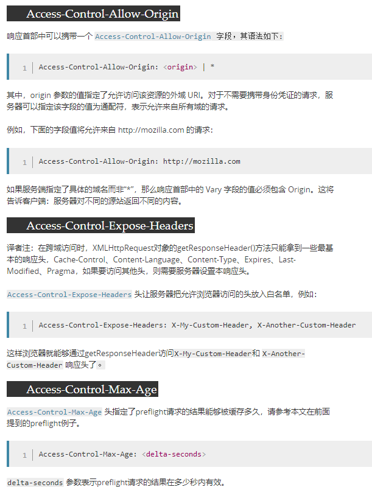
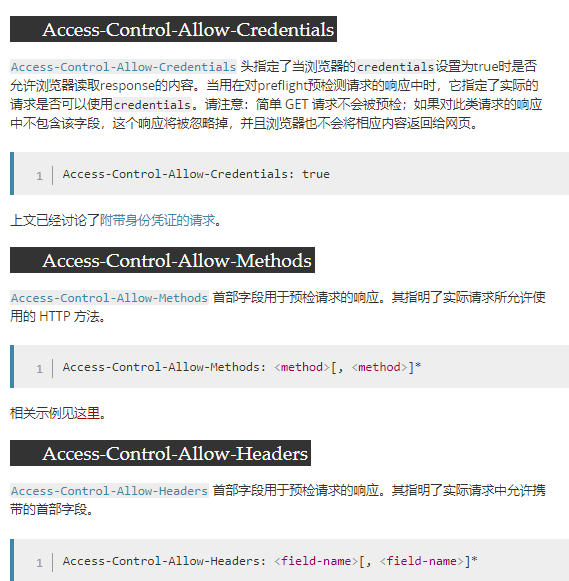